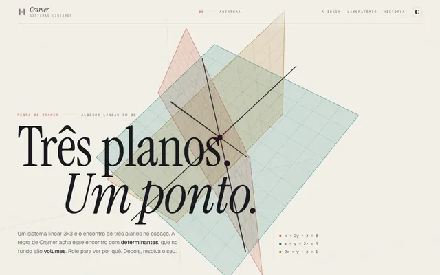

Calculadora do Método de Cramer
Três planos, um ponto.
Começou como uma calculadora e virou um site sobre a regra de Cramer em 3D com um laboratório de matemática. A rolagem mostra a ideia por trás da conta: cada equação de um sistema 3×3 é um plano, a solução é o ponto onde os três se cruzam e o determinante é o volume da caixa formada pelas colunas da matriz.
O que já está no ar
- Sistemas 2×2, 3×3 e 4×4 com frações exatas, sem erro de arredondamento
- Determinante por Sarrus no 3×3 e por cofatores no 4×4
- Passo a passo que se atualiza enquanto você digita e destaca a coluna trocada por b
- Quando det A = 0, a página explica se o sistema é impossível ou indeterminado, pelo posto
- Retas no 2×2 e planos em 3D no 3×3
- Laboratório com matrizes, cônicas e funções (raízes, derivadas e integrais)
- Links que guardam o sistema digitado, tema claro e escuro, teclado e toque
- Testes automatizados da parte matemática com
node --test

Teste aqui · sistema 3×3
Versão compacta, feita para este portfólio, do cálculo que o site completo faz.